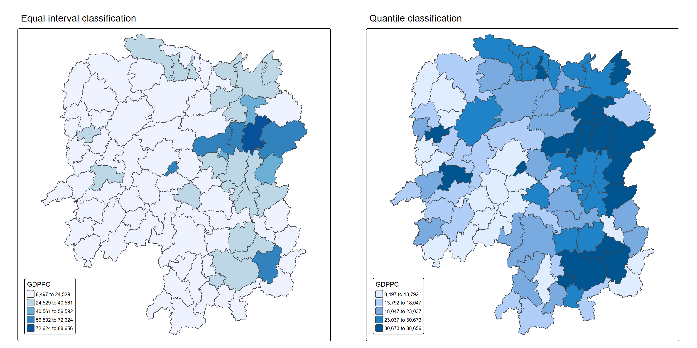
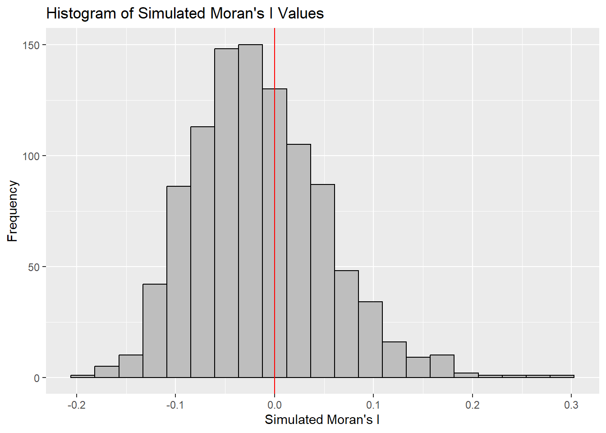
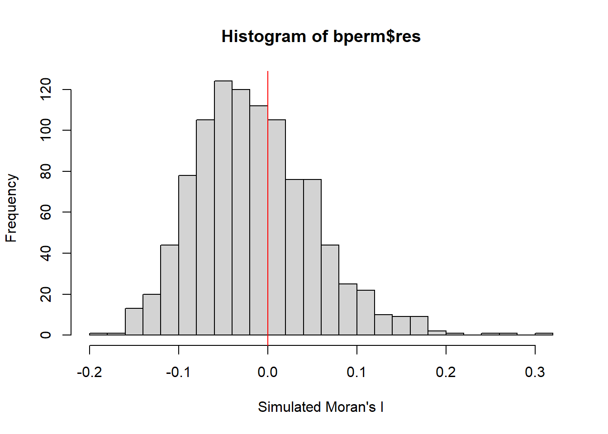
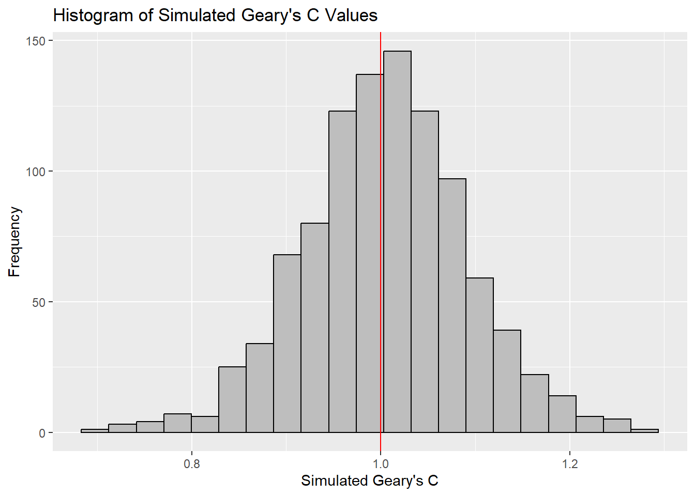
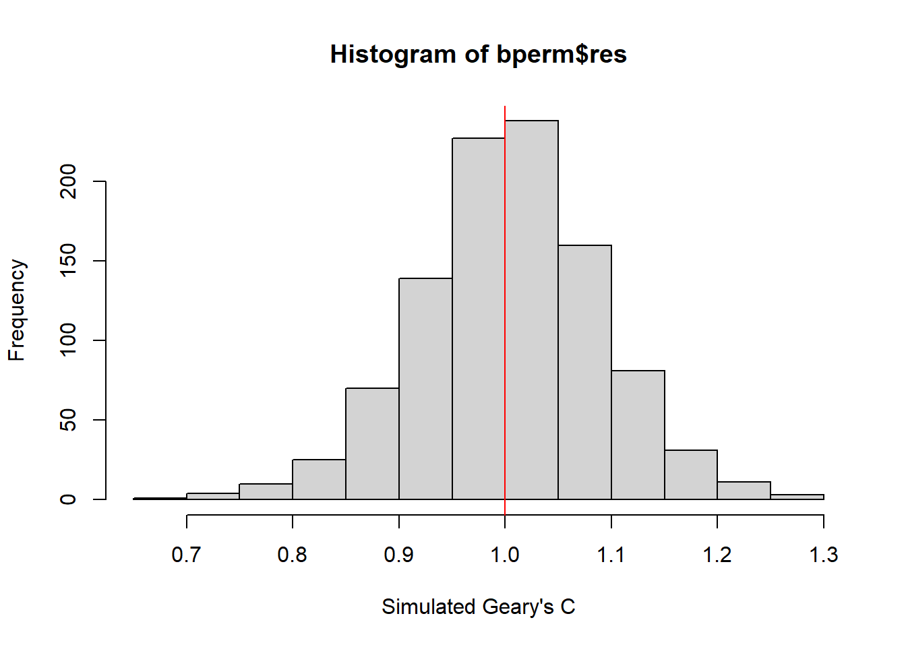
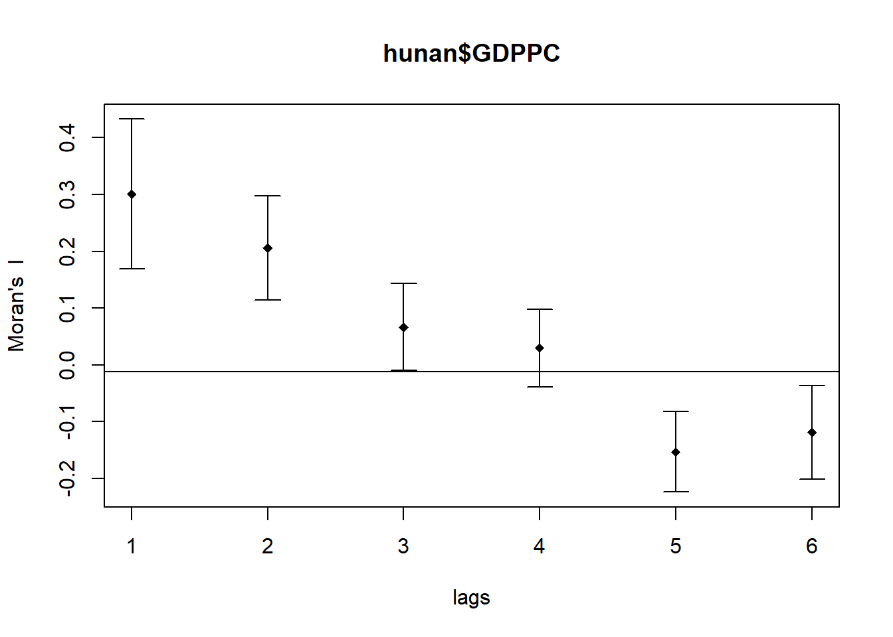
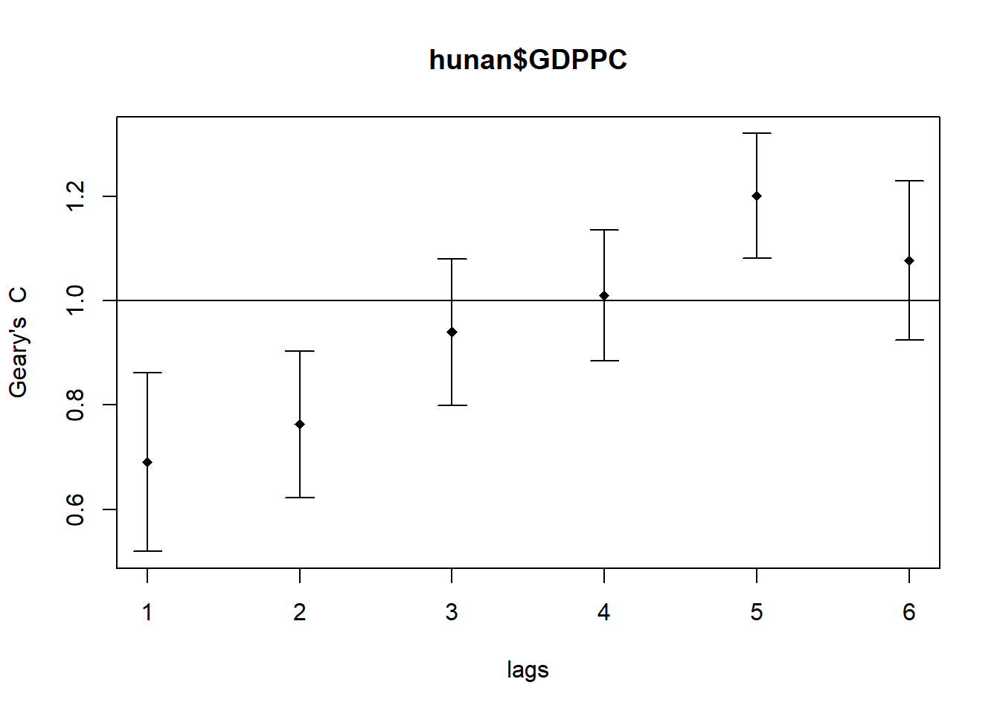

pacman::p_load(sf, spdep, tmap, tidyverse)Hands-on Exercise 5A: Global Measures of Spatial Autocorrelation
1 Overview
In this hands-on exercise, you will learn how to compute Global Measures of Spatial Autocorrelation (GMSA) by using spdep package. By the end to this hands-on exercise, you will be able to:
- Import geospatial data using appropriate function(s) of sf package,
- Import csv file using appropriate function of readr package,
- Perform relational join using appropriate join function of dplyr package,
- Compute Global Spatial Autocorrelation (GSA) statistics by using appropriate functions of spdep package,
- plot Moran scatterplot,
- compute and plot spatial correlogram using appropriate function of spdep package.
- provide statistically correct interpretation of GSA statistics.
2 The Analytical Question
In spatial policy planning, one of the main development objective of the local government and planners is to ensure equal distribution of development in the province. In this study, we will apply spatial statistical methods to examine the distribution of development in Hunan Province, China, using a selected indicator (e.g., GDP per capita).
Our key questions are:
- Is development evenly distributed geographically?
- If not, is there evidence of spatial clustering?
- If clustering exists, where are these clusters located?
3 The Data
The following 2 datasets will be used in this exercise.
| Data Set | Description | Format |
|---|---|---|
| Hunan county boundary layer | Geospatial data set representing the county boundaries of Hunan | ESRI Shapefile |
| Hunan_2012.csv | Contains selected local development indicators for Hunan in 2012 | CSV |
4 Installing and Launching the R Packages
The following R packages will be used in this exercise:
| Package | Purpose | Use Case in Exercise |
|---|---|---|
| sf | Imports, manages, and processes vector-based geospatial data. | Handling vector geospatial data such as the Hunan county boundary layer in shapefile format. |
| spdep | Provides functions for spatial dependence analysis, including spatial weights and spatial autocorrelation. | Computing spatial weights and creating spatially lagged variables. |
| tmap | Creates static and interactive thematic maps using cartographic quality elements. | Visualizing regional development indicators and plotting maps showing spatial relationships and patterns. |
| tidyverse | A collection of packages for data science tasks such as data manipulation, visualization, and modeling. | Importing CSV files, wrangling data, and performing relational joins. |
To install and load these packages, use the following code:
5 Import Data and Preparation
In this section, we will perform 3 necessary steps to prepare the data for analysis.
5.1 Import Geospatial Shapefile
In the code chunk below we will use st_read() of sf package to import Hunan shapefile into R. The imported shapefile will be simple features Object of sf.
hunan <- st_read(dsn = "data/geospatial",
layer = "Hunan")Reading layer `Hunan' from data source
`D:\ssinha8752\ISSS608-VAA\Hands-on_Ex\Hands-on_Ex05\data\geospatial'
using driver `ESRI Shapefile'
Simple feature collection with 88 features and 7 fields
Geometry type: POLYGON
Dimension: XY
Bounding box: xmin: 108.7831 ymin: 24.6342 xmax: 114.2544 ymax: 30.12812
Geodetic CRS: WGS 845.2 Import Aspatial csv File
Next, we will import Hunan_2012.csv into R by using read_csv() of readr package. The output is R dataframe class.
hunan2012 <- read_csv("data/aspatial/Hunan_2012.csv")Rows: 88 Columns: 29
── Column specification ────────────────────────────────────────────────────────
Delimiter: ","
chr (2): County, City
dbl (27): avg_wage, deposite, FAI, Gov_Rev, Gov_Exp, GDP, GDPPC, GIO, Loan, ...
ℹ Use `spec()` to retrieve the full column specification for this data.
ℹ Specify the column types or set `show_col_types = FALSE` to quiet this message.5.3 Perform Relational Join
he code chunk below will be used to update the attribute table of hunan’s SpatialPolygonsDataFrame with the attribute fields of hunan2012 dataframe. This is performed by using left_join() of dplyr package.
hunan <- left_join(hunan,hunan2012) %>%
select(1:4, 7, 15)Joining with `by = join_by(County)`5.4 Visualizing Regional Development Indicator
To visualize the regional development indicator, we are going to prepare a basemap and a choropleth map showing the distribution of GDPPC 2012 by using qtm() of tmap package.
equal <- tm_shape(hunan) +
tm_polygons(fill = "GDPPC",
fill.scale = tm_scale_intervals(
style = "equal",
n = 5,
values = "brewer.blues")) +
tm_borders(fiil_alpha = 0.5) +
tm_layout(legend.position = c("left", "bottom"),
main.title = "Equal interval classification")[tm_borders()] Argument `fiil_alpha` unknown.
[v3->v4] `tm_layout()`: use `tm_title()` instead of `tm_layout(main.title = )`quantile <- tm_shape(hunan) +
tm_polygons(fill = "GDPPC",
fill.scale = tm_scale_intervals(
style = "quantile",
n = 5)) +
tm_borders(fiil_alpha = 0.5) +
tm_layout(legend.position = c("left", "bottom"),
main.title = "Quantile classification")[tm_borders()] Argument `fiil_alpha` unknown.
[v3->v4] `tm_layout()`: use `tm_title()` instead of `tm_layout(main.title = )`tmap_arrange(equal,
quantile,
asp=1,
ncol=2)
Note
Observations
The left plot uses equal interval classification to divide GDP per capita (GDPPC) into five evenly spaced ranges, ensuring each class spans the same value range. This method is ideal for continuous datasets like temperature or precipitation and is appreciated for its simplicity and ease of interpretation, especially for nontechnical audiences. However, it can be misleading for skewed datasets, as many data points may cluster in just one or two classes, leaving others sparsely populated or empty.
In contrast, the right plot applies equal quantile classification, which divides the 88 counties of Hunan into five groups with roughly 17.6 counties each. This approach is useful for highlighting relative rankings, such as identifying the top 20% of counties by GDPPC. While it ensures balanced representation across classes, it can distort the data’s true distribution—counties with vastly different values may end up in the same class, or similar values may be split across different classes, exaggerating differences that aren’t statistically significant.
6 Global Measures of Spatial Autocorrelation
In this section, we will compute global spatial autocorrelation statistics and to perform spatial complete randomness test for global spatial autocorrelation.
6.1 Computing Contiguity Spatial Weights
Before we can compute the global spatial autocorrelation statistics, we need to construct a spatial weights of the study area. The spatial weights is used to define the neighbourhood relationships between the geographical units (i.e. county) in the study area.
In the code block below, the poly2nb() function from the spdep package calculates contiguity weight matrices for the study area by identifying regions that share boundaries.
By default, poly2nb() uses the “Queen” criteria, which considers any shared boundary or corner as a neighbor (equivalent to setting queen = TRUE). If we want to restrict the criteria to shared boundaries only (excluding corners), set queen = FALSE.
wm_q <- poly2nb(hunan,
queen=TRUE)
summary(wm_q)Neighbour list object:
Number of regions: 88
Number of nonzero links: 448
Percentage nonzero weights: 5.785124
Average number of links: 5.090909
Link number distribution:
1 2 3 4 5 6 7 8 9 11
2 2 12 16 24 14 11 4 2 1
2 least connected regions:
30 65 with 1 link
1 most connected region:
85 with 11 linksThe summary report above shows that there are 88 area units in Hunan. The most connected area unit has 11 neighbours. There are two area units with only one neighbours.
6.2 Row-standardised Weights Matrix
To assign weights to neighboring polygons, we use the equal weight method (style=“W”), where each neighbor receives a weight of 1 divided by the total number of neighbors. These weights are then used to calculate the lagged income values by summing the weighted contributions from adjacent counties.
This approach is intuitive and simple, making it a common choice for spatial analysis. However, it has a drawback: polygons at the edges of the study area have fewer neighbors, which can distort their lagged values and misrepresent spatial autocorrelation.
For this example, we’ll stick with style=“W” for clarity and ease of use. Still, it’s worth noting that more robust alternatives like style=“B” exist, which can better handle edge effects and provide more accurate spatial insights.
rswm_q <- nb2listw(wm_q, style="W", zero.policy = TRUE)
rswm_qCharacteristics of weights list object:
Neighbour list object:
Number of regions: 88
Number of nonzero links: 448
Percentage nonzero weights: 5.785124
Average number of links: 5.090909
Weights style: W
Weights constants summary:
n nn S0 S1 S2
W 88 7744 88 37.86334 365.9147
Tip
The input of
nb2listw()must be an object of class nb. The syntax of the function has two major arguments, namely style and zero.poly.style can take values “W”, “B”, “C”, “U”, “minmax” and “S”. B is the basic binary coding, W is row standardised (sums over all links to n), C is globally standardised (sums over all links to n), U is equal to C divided by the number of neighbours (sums over all links to unity), while S is the variance-stabilizing coding scheme proposed by Tiefelsdorf et al. 1999, p. 167-168 (sums over all links to n).
The zero.policy=TRUE option allows for lists of non-neighbors. This should be used with caution since the user may not be aware of missing neighbors in their dataset however, a zero.policy of FALSE would return an error.
7 Global Measures of Spatial Autocorrelation: Moran’s I
In this section, you will learn how to perform Moran’s I statistics testing by using moran.test() of spdep.
Note
Spatial autocorrelation is a key concept in geographic data analysis, helping researchers understand whether similar values are clustered together or spread out across space. One widely used measure for this is Global Moran’s I, which evaluates the overall spatial pattern of a dataset by considering both the location of features and the values they carry. It helps determine whether the observed distribution is random, clustered, or dispersed—offering insights into underlying spatial processes such as economic inequality, disease spread, or environmental patterns.
Here’s how to interpret Global Moran’s I:
Range of Values: Moran’s I ranges from -1 to +1.
- Close to +1 → strong clustering of similar values.
- Close to -1 → strong dispersion of similar values.
- Near 0 → random spatial distribution.
Positive Spatial Autocorrelation: High values are near other high values, and low values are near other low values.
Negative Spatial Autocorrelation: High values are near low values, indicating contrast between neighboring areas.
Zero Spatial Autocorrelation: No meaningful spatial pattern—values are randomly distributed.
Statistical Significance: Moran’s I is accompanied by a z-score and p-value to test whether the observed pattern is statistically significant or could have occurred by chance.
7.1 Moran’s I test
To evaluate whether GDP per capita (GDPPC) values are spatially clustered across regions, we apply Moran’s I test, a statistical method designed to detect spatial autocorrelation. This test is implemented using the moran.test() function from the spdep package in R, which analyzes both the spatial arrangement of regions and their associated GDPPC values. The goal is to determine whether similar economic values tend to group together geographically or are randomly distributed.
Key components of the test include:
- Null Hypothesis (H₀): No spatial autocorrelation exists—GDPPC values are randomly distributed (Moran’s I = 0).
- Alternative Hypothesis (H₁): Positive spatial autocorrelation is present—regions with similar GDPPC values are geographically clustered (Moran’s I > 0).
- Significance Level (α = 0.05): We use a 95% confidence threshold to assess whether the observed spatial pattern is statistically significant or could have occurred by chance.
moran.test(hunan$GDPPC,
listw=rswm_q,
zero.policy = TRUE,
na.action=na.omit)
Moran I test under randomisation
data: hunan$GDPPC
weights: rswm_q
Moran I statistic standard deviate = 4.7351, p-value = 1.095e-06
alternative hypothesis: greater
sample estimates:
Moran I statistic Expectation Variance
0.300749970 -0.011494253 0.004348351
Note
Question: What statistical conclusion can you draw from the output above?
The value of Moran’s I is 0.3007, a positive number, indicating positive spatial autocorrelation. This means that regions with similar GDP per capita (GDPPC) values tend to be geographically close to each other.
The p-value is 1.095e-06, which is much smaller than our alpha value of 0.05. This provides strong evidence against the null hypothesis of no spatial autocorrelation.
Therefore, We will reject the null hypothesis at 95% confidence interval because the p-value is smaller than our chosen alpha value.
7.2 Computing Monte Carlo Moran’s I
Now we analyze the spatial distribution of GDP per capita (GDPPC) across Hunan’s counties using a Monte Carlo simulation. A total of 1000 iterations will be run to assess spatial patterns. The same hypothesis testing framework—based on Moran’s I—will be applied to evaluate statistical significance.
set.seed(1234)
bperm= moran.mc(hunan$GDPPC,
listw=rswm_q,
nsim=999,
zero.policy = TRUE,
na.action=na.omit)
bperm
Monte-Carlo simulation of Moran I
data: hunan$GDPPC
weights: rswm_q
number of simulations + 1: 1000
statistic = 0.30075, observed rank = 1000, p-value = 0.001
alternative hypothesis: greater
Note
Question: What statistical conclusion can you draw from the output above?
The value of Moran’s I is 0.30075, which is a positive number, indicating positive spatial autocorrelation. This suggests that regions with similar GDP per capita (GDPPC) values are geographically close to each other.
The p-value obtained from the Monte Carlo simulation is 0.001, which is much smaller than our alpha value of 0.05. This provides strong evidence against the null hypothesis of no spatial autocorrelation.
Therefore, we will reject the null hypothesis at 95% confidence interval because the p-value is smaller than our chosen alpha value.
7.3 Visualising Monte Carlo Moran’s I
It is always a good practice for us the examine the simulated Moran’s I test statistics in greater detail. This can be achieved by plotting the distribution of the statistical values as a histogram by using the code block below.
We will first observe the summary report of the Monte Carlo Moran’s I output before visualizing the plots using ggplot2 and base R.
# Calculate the mean of the first 999 simulated Moran's I values
mean(bperm$res[1:999])[1] -0.01504572# Calculate the variance of the first 999 simulated Moran's I values
var(bperm$res[1:999])[1] 0.004371574summary(bperm$res[1:999]) Min. 1st Qu. Median Mean 3rd Qu. Max.
-0.18339 -0.06168 -0.02125 -0.01505 0.02611 0.27593 ggplot(data.frame(x = bperm$res), aes(x = x)) +
geom_histogram(binwidth = diff(range(bperm$res)) / 20,
fill = "grey",
color = "black") +
geom_vline(xintercept = 0,
color = "red",
linetype = "solid") +
labs(x = "Simulated Moran's I",
y = "Frequency",
title = "Histogram of Simulated Moran's I Values")
hist(bperm$res,
freq = TRUE, # Show the frequency (count) on y-axis
breaks = 20, # Set the number of bins
xlab = "Simulated Moran's I")
# Add vertical red line at 0 to indicate the mean under the null hypothesis of no autocorrelation
abline(v = 0,
col = "red")
Note
Question: What statistical conclusion can you draw from the output above?
The observed Moran’s I value (0.30075) lies outside the range of most simulated values, indicating that it is an outlier compared to the expected distribution under the null hypothesis, which are centered around the expected value of 0.0 under the null hypothesis of no spatial autocorrelation. The histogram shows that most of the simulated values of Moran’s I are clustered around the mean of -0.01504572, with a variance of 0.004371574.
Since the observed Moran’s I value is significantly greater than the bulk of the simulated values and given the p-value from the test is very small (p < 0.05), there is strong evidence against the null hypothesis.
There is significant positive spatial autocorrelation in the GDP per capita (GDPPC) across regions, as indicated by the Moran’s I test. This suggests that regions with similar GDPPC values are more likely to be geographically clustered.
8 Global Measures of Spatial Autocorrelation: Geary’s C
In this section, we will perform Geary’s C statistics testing by using appropriate functions of spdep package.
8.1 Geary’s C test
Another popular index of global spatial autocorrelation is Geary’s C which is a cousin to the Moran’s I.
Note
Geary’s C, also referred to as Geary’s contiguity ratio, is a statistical measure used to evaluate spatial autocorrelation within a dataset. Unlike Moran’s I, it is more sensitive to local differences, making it especially useful for detecting subtle spatial patterns in smaller geographic areas.
Understanding Geary’s C Values:
Range and Expectation: Geary’s C ranges from 0 to 2, with an expected value of 1 under the null hypothesis of no spatial autocorrelation.
Values Less Than 1: Indicate positive spatial autocorrelation—neighboring areas tend to have similar attribute values.
Value Equal to 1: Suggests no spatial autocorrelation, implying a random spatial distribution of values.
Values Greater Than 1: Reflect negative spatial autocorrelation—neighboring areas are more likely to have contrasting values.
Moran’s I and Geary’s C are both global measures of spatial autocorrelation, but they differ in how they capture spatial relationships. Moran’s I relies on standardized spatial covariance to detect overall clustering patterns
while Geary’s C uses the sum of squared differences between neighboring values, making it more sensitive to local variations. This distinction allows Geary’s C to uncover finer spatial nuances that Moran’s I might overlook.
To test for spatial autocorrelation in GDP per capita (GDPPC) across regions, we can apply Geary’s C using the geary.test() function from the spdep package in R.
- Null Hypothesis (H₀): No spatial autocorrelation exists—Geary’s C equals 1.
- Alternative Hypothesis (H₁): Positive spatial autocorrelation is present—Geary’s C is less than 1.
We use a significance level of α = 0.05, meaning results are considered statistically significant if the p-value is below 0.05.
geary.test(hunan$GDPPC, listw=rswm_q)
Geary C test under randomisation
data: hunan$GDPPC
weights: rswm_q
Geary C statistic standard deviate = 3.6108, p-value = 0.0001526
alternative hypothesis: Expectation greater than statistic
sample estimates:
Geary C statistic Expectation Variance
0.6907223 1.0000000 0.0073364
Note
Question: What statistical conclusion can you draw from the output above?
The value of Geary’s C statistic is 0.6907, which is less than the expected value of 1.0. This indicates positive spatial autocorrelation, meaning regions with similar GDP per capita (GDPPC) values tend to be geographically close to each other.
The p-value is 0.0001526, which is much smaller than our alpha value of 0.05. This provides strong evidence against the null hypothesis of no spatial autocorrelation.
Therefore, we will reject the null hypothesis at 95% confidence interval because the p-value is smaller than our chosen alpha value.
8.2 Computing Monte Carlo Geary’s C
Similar to Moran’s I, it is best to test the statistical significance of Geary’s C using a Monte Carlo simulation.
To perform permutation test for Geary’s C statistic by using geary.mc() of spdep:
set.seed(1234)
bperm=geary.mc(hunan$GDPPC,
listw=rswm_q,
nsim=999)
bperm
Monte-Carlo simulation of Geary C
data: hunan$GDPPC
weights: rswm_q
number of simulations + 1: 1000
statistic = 0.69072, observed rank = 1, p-value = 0.001
alternative hypothesis: greater
Note
Question: What statistical conclusion can you draw from the output above?
The value of Geary’s C statistic is 0.6907, which is less than the expected value of 1.0. This indicates positive spatial autocorrelation, meaning regions with similar GDP per capita (GDPPC) values tend to be geographically close to each other.
The p-value from the Monte Carlo simulation is 0.001, which is much smaller than our alpha value of 0.05. This provides strong evidence against the null hypothesis of no spatial autocorrelation.
Therefore, we will reject the null hypothesis at 95% confidence because the p-value is smaller than our chosen alpha value.
8.3 Visualising the Monte Carlo Geary’s C
Next, we will plot a histogram to reveal the distribution of the simulated values by using the code block below.
We will first observe the summary report of the Geary’s C output before visualizing the plots using ggplot2 and base R.
# Calculate the mean of the first 999 simulated geary's c values
mean(bperm$res[1:999])[1] 1.004402# Calculate the variance of the first 999 simulated geary's c values
var(bperm$res[1:999])[1] 0.007436493summary(bperm$res[1:999]) Min. 1st Qu. Median Mean 3rd Qu. Max.
0.7142 0.9502 1.0052 1.0044 1.0595 1.2722 ggplot(data.frame(x = bperm$res), aes(x = x)) +
geom_histogram(binwidth = diff(range(bperm$res)) / 20,
color = "black",
fill = "grey") +
geom_vline(xintercept = 1,
color = "red") +
labs(x = "Simulated Geary's C",
y = "Frequency",
title = "Histogram of Simulated Geary's C Values")
hist(bperm$res, freq=TRUE, breaks=20, xlab="Simulated Geary's C")
abline(v=1, col="red")
Note
Question: What statistical conclusion can you draw from the output above?
The observed Geary’s C value (0.69072) lies outside the range of most simulated values, which are centered around the expected value of 1.0 under the null hypothesis of no spatial autocorrelation. The histogram shows that most of the simulated values of Geary’s C are clustered around the mean of 1.0044, with a variance of 0.0074.
Since the observed Geary’s C value is significantly lower than the bulk of the simulated values and the p-value from the test is very small (p < 0.05), there is strong evidence against the null hypothesis.
There is significant positive spatial autocorrelation in the GDP per capita (GDPPC) across regions, as indicated by the Geary’s C test. This suggests that regions with similar GDPPC values are more likely to be geographically clustered.
9 Spatial Correlogram
Spatial correlograms are useful for examining patterns of spatial autocorrelation in your data or model residuals. They show how the correlation between pairs of spatial observations changes as the distance (lag) between them increases. Essentially, they are plots of a spatial autocorrelation index (such as Moran’s I or Geary’s C) against distance.
While correlograms are not as fundamental as variograms—a core concept in geostatistics—they serve as powerful exploratory and descriptive tools. In fact, for examining spatial patterns, correlograms can provide more detailed insights than variograms.
9.1 Compute Moran’s I Correlogram
In the code below, we use the sp.correlogram() function from the spdep package to compute a 6-lag spatial correlogram for GDP per capita (GDPPC). This function calculates global spatial autocorrelation using Moran’s I. The base R plot() function is then used to visualize the correlogram.
MI_corr <- sp.correlogram(wm_q,
hunan$GDPPC,
order = 6,
method = "I",
style = "W")
plot(MI_corr)
Tip
However, simply plotting the output does not provide a complete interpretation because not all autocorrelation values may be statistically significant. Therefore, it is important to examine the full analysis report by printing the results.
print(MI_corr)Spatial correlogram for hunan$GDPPC
method: Moran's I
estimate expectation variance standard deviate Pr(I) two sided
1 (88) 0.3007500 -0.0114943 0.0043484 4.7351 2.189e-06 ***
2 (88) 0.2060084 -0.0114943 0.0020962 4.7505 2.029e-06 ***
3 (88) 0.0668273 -0.0114943 0.0014602 2.0496 0.040400 *
4 (88) 0.0299470 -0.0114943 0.0011717 1.2107 0.226015
5 (88) -0.1530471 -0.0114943 0.0012440 -4.0134 5.984e-05 ***
6 (88) -0.1187070 -0.0114943 0.0016791 -2.6164 0.008886 **
---
Signif. codes: 0 '***' 0.001 '**' 0.01 '*' 0.05 '.' 0.1 ' ' 1
Note
Question: What statistical observation can you draw from the plot above?
The spatial correlogram illustrates how Moran’s I values shift across varying distance lags, revealing how GDP per capita (GDPPC) is spatially correlated as the distance between counties increases.
- Strong Positive Autocorrelation at Short Ranges
- At lags 1 and 2, Moran’s I values are notably high (0.30075 and 0.20601), with p-values below 0.001. This indicates that counties with similar GDPPC values are tightly clustered at close distances.
- Weak or No Autocorrelation at Moderate Ranges
- Lag 3 shows a weaker Moran’s I of 0.06683, still statistically significant (p < 0.05), suggesting mild clustering. At lag 4, the value drops to 0.02995 with a non-significant p-value (0.226), implying no meaningful spatial pattern at this range.
- Clear Negative Autocorrelation at Longer Ranges
- Lags 5 and 6 yield negative Moran’s I values (-0.15305 and -0.11871), with highly significant p-values (p < 0.001 and p < 0.01). This suggests that counties with contrasting GDPPC values are more likely to be located farther apart.
9.2 Compute Geary’s C Correlogram and Plot
In the code chunk below, sp.correlogram() of spdep package is used to compute a 6-lag spatial correlogram of GDPPC. The global spatial autocorrelation used in Geary’s C. The plot() of base Graph is then used to plot the output.
GC_corr <- sp.correlogram(wm_q,
hunan$GDPPC,
order=6,
method="C",
style="W")
plot(GC_corr)
Similar to the previous step, we will print out the analysis report by using the code block below.
print(GC_corr)Spatial correlogram for hunan$GDPPC
method: Geary's C
estimate expectation variance standard deviate Pr(I) two sided
1 (88) 0.6907223 1.0000000 0.0073364 -3.6108 0.0003052 ***
2 (88) 0.7630197 1.0000000 0.0049126 -3.3811 0.0007220 ***
3 (88) 0.9397299 1.0000000 0.0049005 -0.8610 0.3892612
4 (88) 1.0098462 1.0000000 0.0039631 0.1564 0.8757128
5 (88) 1.2008204 1.0000000 0.0035568 3.3673 0.0007592 ***
6 (88) 1.0773386 1.0000000 0.0058042 1.0151 0.3100407
---
Signif. codes: 0 '***' 0.001 '**' 0.01 '*' 0.05 '.' 0.1 ' ' 1
Note
Question: What statistical observation can you draw from the plot above?
The spatial correlogram using Geary’s C reveals how GDP per capita (GDPPC) values relate across varying distances, helping us understand clustering or dispersion patterns over space.
- Strong Positive Autocorrelation at Short Distances
- Geary’s C values at lags 1 and 2 are 0.6907 and 0.7630, both significantly below 1. This indicates that counties with similar GDPPC values tend to be located near each other (p < 0.05).
- No Meaningful Autocorrelation at Mid-Range Distances
- At lags 3 and 4, Geary’s C values approach 1.0 (0.9397 and 1.0098), and their confidence intervals include 1. This suggests no statistically significant spatial autocorrelation (p > 0.05).
- Clear Negative Autocorrelation at Longer Distances
- Lag 5 shows a Geary’s C value of 1.2008, which is significantly above 1 and outside the confidence interval. This reflects a strong negative spatial autocorrelation, meaning dissimilar GDPPC values are more likely to be found farther apart (p < 0.05).
- No Significant Pattern at the Furthest Distance
- At lag 6, the Geary’s C value is 1.0773, slightly above 1. However, since the confidence interval includes 1, there is no significant spatial autocorrelation at this distance (p > 0.05).